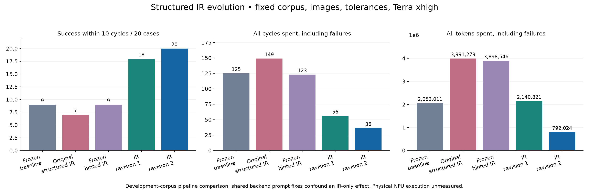
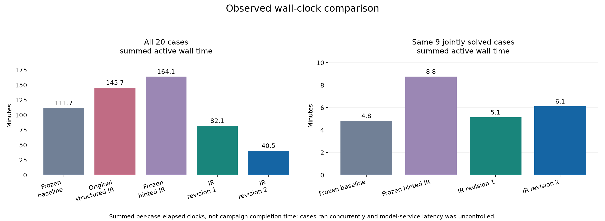
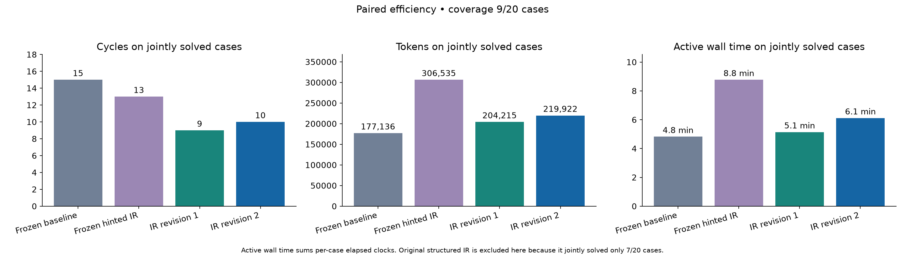
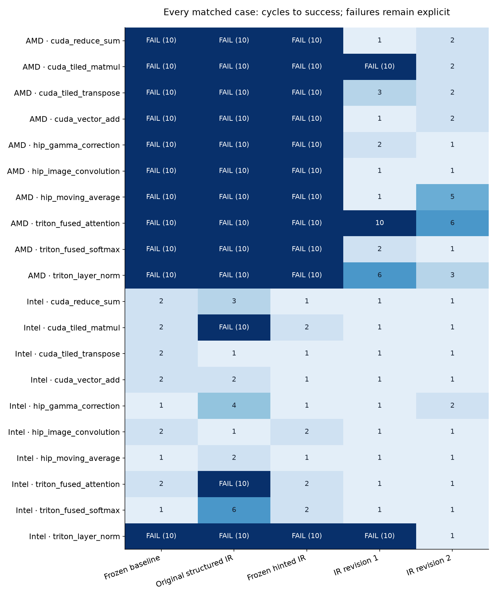

Same 20 kernel/target pairs, Terra xhigh, ten cycles, container images and numerical tolerance. Includes every unsuccessful case. Active case time is the sum of per-case elapsed clocks; it is not the campaign clock because cases ran concurrently. No physical target execution or NPU latency is measured. Development-set gains and shared backend prompt changes do not establish IR-only causality or research novelty.
| Pipeline | Success | AMD | Intel | Cycles spent | Tokens spent | Active case time | LLM calls |
|---|---|---|---|---|---|---|---|
| Frozen baseline | 9/20 | 0/10 | 9/10 | 125 | 2,052,011 | 111.7 min | 125 |
| Original structured IR | 7/20 | 0/10 | 7/10 | 149 | 3,991,279 | 145.7 min | 256 |
| Frozen hinted IR | 9/20 | 0/10 | 9/10 | 123 | 3,898,546 | 164.1 min | 246 |
| IR revision 1 | 18/20 | 9/10 | 9/10 | 56 | 2,140,821 | 82.1 min | 108 |
| IR revision 2 | 20/20 | 10/10 | 10/10 | 36 | 792,024 | 40.5 min | 56 |



[
{
"label": "Original structured IR",
"requested": 20,
"jointly_solved": 7,
"token_complete_pairs": 7,
"cycles_to_success": {
"baseline": 11,
"revision": 19,
"baseline_over_revision": 0.5789473684210527
},
"total_tokens": {
"baseline": 129041,
"revision": 414318,
"baseline_over_revision": 0.31145400392934897
},
"end_to_end_seconds": {
"baseline": 228.01546732600036,
"revision": 621.2327402880001,
"baseline_over_revision": 0.3670371062869186
}
},
{
"label": "Frozen hinted IR",
"requested": 20,
"jointly_solved": 9,
"token_complete_pairs": 9,
"cycles_to_success": {
"baseline": 15,
"revision": 13,
"baseline_over_revision": 1.1538461538461537
},
"total_tokens": {
"baseline": 177136,
"revision": 306535,
"baseline_over_revision": 0.5778654965990833
},
"end_to_end_seconds": {
"baseline": 289.29878630799976,
"revision": 526.3744894720012,
"baseline_over_revision": 0.5496063963855682
}
},
{
"label": "IR revision 1",
"requested": 20,
"jointly_solved": 9,
"token_complete_pairs": 9,
"cycles_to_success": {
"baseline": 15,
"revision": 9,
"baseline_over_revision": 1.6666666666666667
},
"total_tokens": {
"baseline": 177136,
"revision": 204215,
"baseline_over_revision": 0.8673995543912053
},
"end_to_end_seconds": {
"baseline": 289.29878630799976,
"revision": 308.5335567139955,
"baseline_over_revision": 0.9376574444256448
}
},
{
"label": "IR revision 2",
"requested": 20,
"jointly_solved": 9,
"token_complete_pairs": 9,
"cycles_to_success": {
"baseline": 15,
"revision": 10,
"baseline_over_revision": 1.5
},
"total_tokens": {
"baseline": 177136,
"revision": 219922,
"baseline_over_revision": 0.8054492047180364
},
"end_to_end_seconds": {
"baseline": 289.29878630799976,
"revision": 366.85310405600467,
"baseline_over_revision": 0.788595716131203
}
}
]
Case CSV · Summary and audit JSON
Revision two: 20/20 successes, 36 cycles, 792,024 tokens. All cases solved within six cycles. The baseline solved 9/20 using 125 cycles and 2,052,011 tokens. Total corpus tokens fell by 61.4%.
The original three pipelines ran concurrently, so their only exact campaign clock is 32.3 minutes for all 60 cases; it cannot be split by pipeline. Summed per-case active time was 111.7 minutes for baseline, 145.7 for original structured IR, and 164.1 for hinted IR.
On the nine jointly solved cases, cycles fell from 15 to 10, while tokens rose from 177,136 to 219,922 (+24.2%). Active case time was 4.8 minutes for baseline, 8.8 for hinted IR, and 6.1 for revision two. Lower overall cost comes with remaining token and wall-time overhead on already solvable cases.
The executable center primitive removed all 1,280 layer-normalization boundary mismatches. All 20 IRs passed on their first validation; 16 backend repairs reused validated IR without another intermediate call. Shared backend API guidance also contributed to the gains. A baseline with the same improved contract and held-out trials are needed to isolate the IR contribution.
The two development rounds together used 2,932,845 translation-model tokens. Physical NPU execution and performance remain unknown.
Detailed findings, verification, limitations and run commands